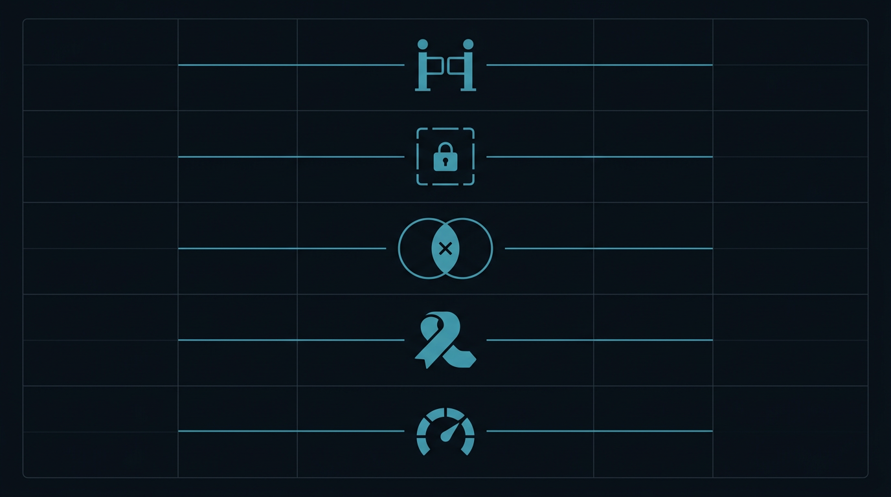

Patterns · 2026
Five Governance Patterns for Enterprise AI Agents
The models are ready. The governance usually isn't.

I've spent the last few months running dozens of AI agents against enterprise systems like Salesforce and Jira while connecting with external APIs and MCP servers. A significant takeaway? The models are ready, but the governance usually isn't.
Speed is obviously the goal with agents, but moving fast without oversight is just a recipe for a high-speed collision with a dangerous blast radius.
After hitting a few walls, I found several patterns that work:
01
Gates, Not Walls
Rigid, phase-gated processes kill the speed you introduced agents for. The better approach is continuous, lightweight checkpoints: the agent proposes a path, and a human either validates or redirects. I use a confidence evaluation with interactive dev engagement before, during, and after coding.
02
Bounded Authority
A single agent that can "do everything" is a liability. I found much more success with specialized agents: a business analyst agent that does research, a testing agent that only writes tests and deviously tries to break the system. Security and architecture should enforce these boundaries, not just the system prompt.
03
Conflict Detection
When you have multiple agents working concurrently, they will step on each other, modifying the same file or invalidating each other's work. You need a management layer that catches these overlaps before they become bugs. It's not glamorous, but it's load-bearing infrastructure. I use specialized debugging and refactoring agents that activate when the gates detect an issue.
04
Passive Audit Trails
Logging shouldn't be the agent's decision. Every action, its reasoning, and the final outcome needs to be captured automatically. If your audit trail depends on the agent being "well-intentioned," you don't actually have an audit trail. Use hooks. Validate with metrics: the agent has to show their work. They capture their novel learnings as reflections. These get processed and made available for every next agent. Figure it out once: build project, team, and institutional knowledge.
05
Risk-Based Loops
Reviewing every single action turns your human team into an expensive bottleneck. The goal is to auto-approve low-risk tasks (or automatically route them back to be fixed) and flag high-impact ones for a human. Calibrating that threshold is where the art of scaling agentic workflows lives.
The teams that successfully scale agents are the ones who've figured out how to manage them and enable continuous learning. Every session improves the ecosystem.
← All writing